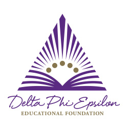

At Drexel, I am involved in Alpha Kappa Psi, a co-ed professional business fraternity, Delta Phi Epsilon, an international sorority and Dean's Student Advisory Board (DSAB) In Alpha Kappa Psi, I held two positions: Chapter Relations Chair and Rush Chair. As chapter relations chair, I coordinated with other chapters around the country to coordinate a joint professional event. As rush chair, I was in charge of planning five days of events for prospective members and overseeing a committee of 10 people. In Delta Phi Epsilon, I served as the Vice President of Finance and was accountable for the budget of the organization. As a board member for DSAB, I have acted as a liaison for the students and the Dean to implement improvements to the school.
